GnssToolKit3 用户手册
GnssToolKit3为一款配合杭州中科微卫星定位接收机(以下简称为接收机)使用的软件.
用于显示接收机的输出信息, 配置接收机的内部状态, 并对接收机的性能做一些简单的测试.
GnssToolKit3 用户手册部署运行语言选择主题选择帮助和提示连接接收机串口设置串口菜单串口名称设置波特率设置串口状态NMEA导航电文NMEA视图NMEA视图选项NMEA语句过滤卫星信号质量载躁比视图载躁比柱状图载躁比视图选项卫星方位图星位图星位图说明星位图选项定位点定位点视图定位点视图说明定位点视图选项基础导航信息基础视图基础视图说明详细导航信息数据视图数据视图说明辅助定位辅助定位视图下载设置进行辅助定位测姿测姿视图测姿数据配置接收机配置视图发送配置保存配置PCAS配置BACE配置自定义消息发送文件消息总览消息视图消息树消息控制NMEA消息NAV消息十六进制导航电文十六进制视图十六进制视图选项数据包数据包视图数据包内容数据包视图选项调试调试视图调试视图选项保存接收机导航电文进入保存模式保存状态回放接收机导航电文选择回放文件调整回放速度暂停回放继续回放回放进度查找和跳转重启动性能测试打开重启动测试视图设置测试参数开始测试停止测试测试数据导出测试数据测试误差生成KML文件打开从NMEA生成KML对话框生成KML的选项添加NMEA文件生成KML升级导航代码选择升级文件关于我们附录ANMEA的校验和NMEA中的经纬度更多NMEA解析
部署
解压GnssToolKit3.zip到本地磁盘.
运行
在GnssToolKit3文件夹中, 双击GnssToolKit3.exe.
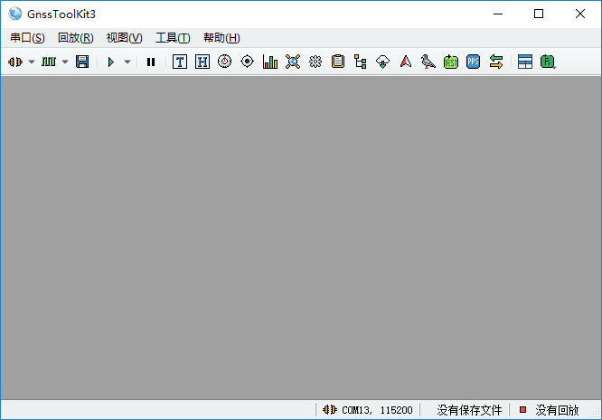
语言选择
在”帮助”菜单中, 选择”语言”菜单项, 可以选择程序界面语言.
目前有中文和英文两种语言选项.
更换语言需要重新启动本软件.
主题选择
在”帮助”菜单中, 选择”主题”菜单项, 可以选择程序界面主题.
目前有light和 dark两种主题选项.
更换主题需要重新启动本软件.
帮助和提示
在”帮助”菜单中, 选择用户手册项(F1快捷键), 可以打开本手册.
在”帮助”菜单中, 选择协议文档项(F2快捷键), 可以打开中科微协议文档.
用户手册和协议文档在软件部署路径的doc目录下.
当鼠标移动到控制按键时, 会在底部状态栏左侧显示提示信息.
连接接收机
将计算机串口和接收机串口用串口线相连, 给接收机上电.
使用USB转串口线时, 如果鼠标乱飞, 请断开接收机电源. 用本软件打开USB串口后, 再给接收机上电.
使用PL2302系列的USB转串口芯片时, 可能会遇到串口通信有乱码的情况, 系系统驱动bug.
串口设置
串口菜单
点击主菜单上的串口菜单项, 打开串口菜单.
该菜单用于配置串口.
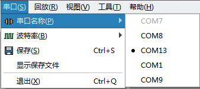
串口名称设置
选择串口名称菜单项, 会列出当前系统中的所有串口号.
如果该串口号字体为灰色(如图中的COM7), 表示该串口设备正忙(可能被其他进程占用), 无法被本程序使用.
点击与接收机相连接的串口号, 使本软件与接收机建立连接.
波特率设置
选择波特率菜单项, 列出对接收机有效的波特率.
波特率默认为9600, 用户需要根据接收机的实际情况选择相应的值.
只有波特率一致时, 本软件才能与接收机正常通信.
如果不确定接收机的波特率, 可以打开视图菜单中的NMEA视图, 然后逐个试验每个波特率.
如果NMEA视图中有可读的导航电文显示, 则表明当前的选择与接收机波特率一致.
串口状态
本软件底部的状态栏, 有串口状态指示灯.
图标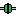表示串口已经打开.
图标表示串口没有打开.
如果串口指示灯闪烁, 表示串口中有数据通信.
NMEA导航电文
NMEA视图
在视图菜单中, 选择NMEA, 打开NMEA视图.
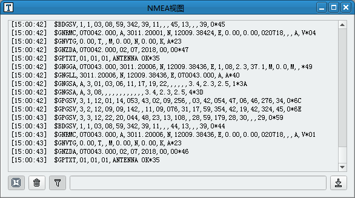
NMEA视图选项
| 控件 | 功能 |
|---|---|
| 显示或隐藏收到NMEA语句的时间戳. | |
| 清空文本框的文本. | |
 | 开启或关闭过滤器功能. |
| 将文本滚动到最底部. |
NMEA语句过滤
可以使用正则表达式过滤NMEA.
示例:
| 过滤器输入 | 功能 |
|---|---|
GGA | 只显示GGA语句. |
RMC|GSA|GSV | 只显示RMC,GSA和GSV三种语句. |
卫星信号质量
载躁比视图
在视图菜单中, 选择载躁比, 打开载躁比视图.
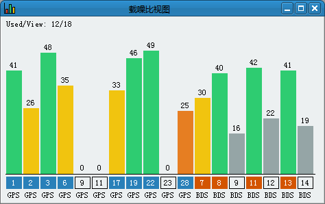
载躁比柱状图
用柱状图显示卫星的载噪比, 每个柱状条代表一颗卫星.
| 参数 | 位置 | 说明 |
|---|---|---|
| 载躁比 | 柱状条上方的数字 | 载躁比值(dB), 柱状条高度与载躁比值成正比. |
| 参与定位 | 柱状条颜色 | 彩色1表示参与定位, 灰色表示未参与定位. |
| PRN | 柱状条下方的数字 | 背景颜色指示卫星系统. 若未参与定位, 背景为透明. |
| 卫星系统 | 最下方文字 | 用3个字母表示卫星系统. |
载躁比视图选项
使用右键, 打开配置菜单.
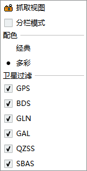
| 菜单项 | 功能 |
|---|---|
| 抓取视图 | 保存载躁比视图 到系统粘贴板. |
| 分栏模式 | 分栏显示各个系统的卫星. |
| 配色 | 视图的配色模式, 经典双色模式和多彩模式. |
| 卫星过滤 | 过滤特定系统的卫星. |
卫星方位图
星位图
在视图菜单中, 选择星位图, 打开星位图视图.
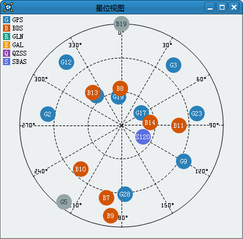
星位图说明
| 参数 | 说明 |
|---|---|
| 卫星 | 每个圆代表一颗卫星. |
| PRN | 圆内的数字表示卫星的PRN. |
| 仰角 | 图中心为90度, 图边沿为0度. |
| 方位角 | 上方为0度, 表示正北方. 以顺时针增加方位角. |
| 卫星系统 | 不同颜色和字符, 表示不同的卫星系统. |
| 参与定位 | 彩色表示参与定位, 灰色表示未参与定位. |
星位图选项
使用右键, 打开星位图选项菜单.

| 菜单项 | 功能 |
|---|---|
| 抓取视图 | 保存星位图 到系统粘贴板. |
| 卫星过滤 | 过滤特定系统的卫星. |
定位点
定位点视图
在视图菜单中, 选择定位点, 打开定位点视图.
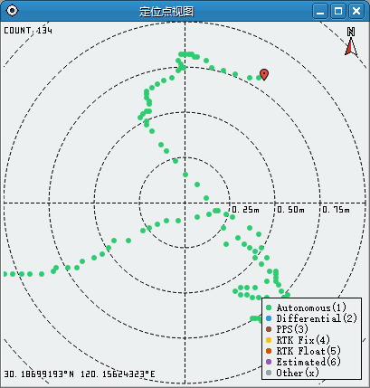
定位点视图说明
| 名称 | 说明 |
|---|---|
| 当前定位点 | 表示当前定位点. |
| 历史定位点 | 带有色彩的小圆点. 色彩指示定位质量. 具体参见视图右下角的图例. |
| 中心点经纬度 | 在视图左下角显示. |
| 定位点计数 | 在视图左上角显示. |
| 放缩视图 | 使用鼠标滚轮或+-按键, 放大或缩小视图. |
定位点视图选项
使用右键, 打开定位点视图选项菜单.

| 菜单项 | 功能 |
|---|---|
| 设置中心点座标 | 在打开的对话框中, 设置定位点视图的中心点经纬度. |
| 移除所有定位点 | 删除视图中记录的所有定位点. |
| 抓取视图 | 保存定位点视图的图片到系统粘贴板. |
| 显示/隐藏侧边栏 | 显示或隐藏导航信息, 统计信息的侧边小窗口. |
| 显示图例 | 是否显示定位点颜色-质量的图例. |
| 追踪当前点 | 是否自动设置当前定位点为视图中心点. |
| 放缩 | 视图的Zoom功能. |
| 定位点过滤 | 是否显示某种定位质量的定位点. |
基础导航信息
基础视图
在视图菜单中, 选择基础, 打开基础视图.

基础视图说明
| 参数 | 说明 | 格式 |
|---|---|---|
| 纬度 | 接收机输出的纬度. | 度 |
| 经度 | 接收机输出的经度. | 度 |
| 海拔 | 接收机输出的海拔. | 米 |
| 时间 | 接收机输出的时间. | UTC |
| 日期 | 接收机输出的日期. | UTC |
详细导航信息
数据视图
在视图菜单中, 选择数据, 打开数据视图.

数据视图说明
| 名称 | 说明 | 备注 |
|---|---|---|
| 纬度 | 纬度座标. | 度 |
| 经度 | 经度座标. | 度 |
| 定位质量 | 定位点的定位质量.2 | - |
| 定位模式 | 定位点的定位模式.[^FixMode.] | - |
| 海拔 | 海拔高度. | 米 |
| UTC时间 | UTC的时间. | 时:分:秒.毫秒 |
| UTC日期 | UTC的日期. | 年/月/日 |
| 速度 | 对地速度. | 米/秒 |
| 航向 | 接收机航向. | 度 |
| Yaw | 测姿航向. | 度 |
| 位置精度 | PDOP, 位置精度因子. | - |
| 水平精度 | HDOP, 水平精度因子. | - |
| 垂直精度 | VDOP, 垂直精度因子. | - |
| 伪距RMS | 伪距误差标准差的RMS值. | 米 |
| 纬度标准差 | 纬度向误差标准差. | 米 |
| 经度标准差 | 经度向误差标准差. | 米 |
| 海拔标准差 | 高度向误差标准差. | 米 |
辅助定位
辅助定位可以极大的改善接收机首次定位的性能.
辅助定位视图
在视图菜单中, 选择辅助定位, 打开辅助定位视图.

下载设置
| 参数 | 说明 | 备注 |
|---|---|---|
| 服务器 | 提供辅助数据的服务器地址 | 默认为中科微AGNSS服务器. |
| 端口 | 辅助定位服务端口 | - |
| 用户名 | 注册的用户名称 | 默认为freetrial, 访问限制1000次/小时. |
| 口令 | 对应用户的口令 | - |
| 数据类型 | 辅助数据的类型 | eph-星历辅助, aid-时间位置辅助, full-全部辅助. |
| 卫星系统 | 辅助星历的卫星系统 | gps-gps卫星, bd-北斗卫星. |
| 纬度 | 粗略的纬度 | 单位: 度. |
| 经度 | 粗略的经度 | 单位: 度. |
| 消息文本 | 由以上参数自动生成的消息 | 可自由修改. |
进行辅助定位
下载参数设置完成后, 点击辅助定位 按钮, 进行辅助定位.
测姿
只有测姿系列产品才有测姿功能.
测姿视图
在视图菜单中, 选择测姿, 打开测姿视图.

测姿数据
| 名称 | 说明 |
|---|---|
| 航向(Yaw) | 由表盘中间的数字表示. 表盘也会根据航向转动. |
| 状态 | 由航向下方的文字表示. 无效, 固定解和浮点解三种状态. |
配置接收机
配置视图
在视图菜单中, 选择配置, 打开配置视图.

发送配置
使用发送按键, 将当前界面上的配置给接收机.
配置在接收机重启后失效.
保存配置
保存接收机所有配置到Flash.
保存后, 配置在接收机重启后依然生效.
PCAS配置
通过NMEA格式的PCAS命令, 对接收机进行配置
| 参数 | 说明 | 备注 |
|---|---|---|
| 波特率 | 接收机输出导航信息的波特率. | 4800~115200 |
| 定位更新率 | 接收机输出定位点的频率. | 1Hz, 2Hz, 5Hz,10Hz |
| NMEA语句 | 各个NMEA语句的输出频率. | 0: 不输出 1: 1秒1次 2: 2秒1次 ... 9: 9秒1次 空白: 保持原状 |
| 卫星系统 | 接收机工作系统配置. | 启用或禁用GPS, BDS或GLONASS系统. |
| 协议版本 | 输出的NMEA协议版本. | - |
| 重启 | 重启接收机. | 热启动, 冷启动或恢复出厂配置启动. |
| 动态模型 | 接收机使用的动态模型. | 暂未实装. |
| 待机 | 使接收机进入待机模式. | 在接收机待机一段时间后, 重新启动. |
BACE配置
通过HEX格式的BACE命令, 对接收机进行配置
| 参数 | 说明 | 备注 |
|---|---|---|
| UART | 配置UART端口. | 波特率和协议的输入输出设置. |
| 消息 | 各消息的输出频率. | 0: 不输出 1: 1秒1次 2: 2秒1次 ... 65535(0xff): 仅输出一次(查询). |
| 时间脉冲 | 授时时间脉冲设置. | 参考CASIC协议中CFG->CFG-TP章节. |
自定义消息
用户可以编辑自定义的消息.
- 支持
T(NMEA)和H(HEX)模式 - 支持自动添加消息头和校验和.
- 记录使用过的自定义消息.
发送文件
选择一个文件, 发送给接收机.
文件大小限制为8MB
消息总览
消息视图
在视图菜单中, 选择消息, 打开消息视图.

消息树
消息树列出了所有支持的消息.
如果在一段时间内没有收到某种消息, 那么这个消息对应的分支就会变为灰色.
消息控制
在消息树的分支上使用右键, 打开消息控制菜单.
| 项 | 功能 |
|---|---|
| 打开 | 打开该消息, 1秒输出1次. |
| 关闭 | 关闭该消息. |
| 查询一次 | 该消息仅输出1次. 对消息分支进行 双击, 查询该消息一次. |
NMEA消息
NMEA格式的消息
| 语句名称 | 语句ID | 主要内容 |
|---|---|---|
GGA | 4E 00 | UTC时间, 经纬度, 定位质量, HDOP, 海拔高度, 参与定位卫星数. |
GLL | 4E 01 | 经纬度, UTC时间, 定位模式. |
GSA | 4E 02 | 参与定位卫星的PRN编号, PDOP, HDOP, VDOP. |
GSV | 4E 03 | 可见卫星数, 卫星PRN编号, 仰角, 方位角, 载躁比. |
RMC | 4E 04 | UTC时间, 经纬度, 定位模式, 速度, 航向, 日期. |
VTG | 4E 05 | 速度, 航向. |
ZDA | 4E 08 | UTC时间, UTC日期. |
GST | 4E 07 | 伪距误差标准差RMS, 经纬高误差标准差. |
NAV消息
导航状态消息
| 消息名称 | 消息ID | 主要内容 |
|---|---|---|
NAV-STATUS | 01 00 | 接收机导航状态. |
NAV-DOP | 01 01 | 定位精度因子. |
NAV-SOL | 01 02 | ECEF坐标系下的PVT导航信息. |
NAV-PV | 01 03 | 大地坐标系下的位置与速度信息. |
NAV-TIMEUTC | 01 10 | UTC时间信息. |
NAV-CLOCK | 01 11 | 时钟结算信息. |
NAV-GPSINFO | 01 20 | GPS卫星信息. |
NAV-BDSINFO | 01 21 | BDS卫星信息. |
NAV-GLNINFO | 01 22 | GLONASS卫星信息. |
十六进制导航电文
十六进制导航电文为符合CASIC Standard Interface Protocol协议的导航电文.
十六进制视图
在视图菜单中, 选择十六进制, 打开十六进制视图.

十六进制视图选项
| 控件 | 功能说明 |
|---|---|
| 是否显示收到消息时的时间戳. | |
| 切换详细模式和原始数据模式. | |
| 删除视图中的文本. | |
列数 | 设置Payload的最大列数. |
| 滚动到底部. |
数据包
数据包视图展示程序接收到的或发出的数据包. 该视图比较耗费CPU和内存, 请慎用.
数据包视图
在视图菜单中, 选择数据包, 打开数据包视图.

数据包内容
| 项目名称 | 项目说明 |
|---|---|
| 时间戳 | 接收或发出该数据包的时间. |
| 名称 | 数据包的名称. |
| 方向 | <-表示程序接收到的数据包. ->表示程序发送的数据包. |
| 类型 | 数据包类型, NMEA或二进制. |
| 详细 | 数据包的原始数据值. |
数据包视图选项
| 控件 | 说明 |
|---|---|
| 清除所有数据包. | |
| 保存数据包. | |
| 滚动到底部. |
调试
调试视图
在视图菜单中, 选择调试, 打开调试视图.

调试视图选项
| 控件 | 功能说明 |
|---|---|
| 清除视图内的文本. | |
| 开启视觉模式. 该模式下, 缓冲接收机的输出. 收到包含关键字(如: ZDA)的语句后, 显示所有的缓冲.这样NMEA导航电文视觉效果稳定, 便于开发人员长时间观看. | |
| 关闭视觉模式. 及时显示接收机的输出, 不做任何缓冲. | |
| 设置调试视图的字体. | |
| SolariedDark配色 | |
| SolariedLight配色 | |
| 滚动文本到底部 |
保存接收机导航电文
进入保存模式
在串口菜单中, 点击保存(Ctrl+S).
在弹出的文件对话框中选择保存路径后, 进入保存模式.
程序会根据串口名称和时间自动生成一个保存文件名称.
在保存模式下, 串口中所有的数据都会被保存到文件中.
暂停 功能不会影响到数据的保存.
保存状态
程序状态栏右下角有保存状态指示灯.
显示保存状态和保存文件名称.
保存图标闪烁表示有数据保存发生.
回放接收机导航电文
选择回放文件
在回放菜单中, 点击开始.
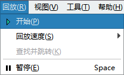
在弹出的对话框中, 选择文件进行回放.
- 回放文件大小限制为4GB.
回放优先与串口. 在回放时, 串口中的导航电文将被忽略.回放并不影响串口数据的保存.
调整回放速度
在回放菜单中, 选择回放速度.
目前有x0.25, x0.5, x1, x2, x4, x8, x16和最大速度几种选项.
- x1模式下, 回放会尽力控制在1秒1组导航电文.
- 最大速度模式下, 对回放不做任何的延迟处理.
暂停回放
在回放菜单中, 点击暂停(快捷键Space), 进入暂停模式.
暂停模式不影响串口数据的保存
继续回放
在回放菜单总, 点击继续(快捷键Space), 退出暂停模式.
回放进度
在回放模式下, 任务栏上显示回放进度.
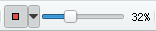
用鼠标移动滑块控制回放进度.
查找和跳转
在回放菜单中, 点击查找并跳转.
在弹出的对话框中, 填写查找关键字. 一般推荐用时间戳(如: 021223).
点击OK键, 从当前回放位置, 向后搜索关键字.
如果搜索到关键字, 则将回放进度跳转到关键字的位置.
重启动性能测试
测试重启的耗时和精度.
打开重启动测试视图
在视图菜单中, 选择重启测试, 打开重启动测试视图.
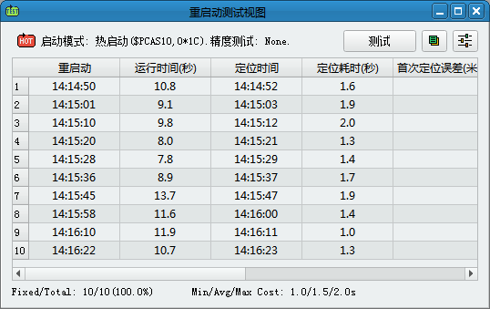
设置测试参数
进行测试前, 需要对测试参数进行配置.
点击 按钮, 对测试参数进行设置.
| 测试参数 | 说明 | 备注 |
|---|---|---|
| 测试次数 | 本次测试的最大计数 | |
| 最小稳定时间 | 定位后, 接收机等待下次重启的最小时间 | 秒 |
| 最大稳定时间 | 定位后, 接收机等待下次重启的最大时间 | 秒 |
| 启动模式 | 接收机启动的模式. | 冷, 热, 自主. |
| 自定义消息 | 在自定义模式下, 编辑自定义的重启动消息. | 会记录在History菜单中 |
| 定位精度测试 | 定位精度的要求. 不测定位: 对定位精度没有要求. 3D: 要求定位点的3D误差在设定范围内. 海拔: 要求定位点的海拔误差在设定范围内. | - |
| 定位误差 | 定位精度误差值 | 米 |
| 格式 | 经纬度的格式 | 度, 度分, 度分秒 |
| 纬度 | 基准纬度值 | - |
| 经度 | 基准经度值 | - |
| 海拔 | 基准海拔值 | 米 |
开始测试
点击测试按钮, 开始测试.
在测试次数达到设定值后, 自动退出测试.
停止测试
点击停止按钮, 停止测试.
测试数据
测试产生的数据如下
| 数据名称 | 说明 | 备注 |
|---|---|---|
| 重启动 | 发送重启命令的时间戳. | - |
| 运行时间 | 接收机运行的时间. | 秒 |
| 定位时间 | 接收机定位时的时间戳. | - |
| 定位耗时 | 接收机从收到重启动命令到再次定位的耗时. | 秒 |
| 首次定位误差 | 首次定位时定位点的误差值. | 米 |
| 精准定位时间 | 定位精度符合要求的定位点时间戳. | - |
| 精准定位耗时 | 接收机从收到重启命令到再次精准定位的耗时. | 秒 |
| 定位误差 | 当前定位点的误差值. | 米 |
导出测试数据
点击按钮, 将测试数据以CSV的格式拷贝到系统粘贴板中.
用户可以将数据粘贴到表格软件中, 进行进一步的分析和处理.
测试误差
重启时间误差
测试采用发送重启动命令的时间作为接收机重启时间, 可能比真实的重启时间要早0~1秒.
采样频率误差
测试采用10Hz的采样频率, 计时器本身误差为0.1秒.
重启保护误差
为了防止接收机缓存输出的干扰, 重启动有1秒的临界保护时间, 也就是说能测出的最小启动耗时为1秒.
生成KML文件
根据NMEA导航电文生成KML文件, 在GoogleEarth中使用.
打开从NMEA生成KML对话框
在工具菜单中, 点击从NMEA生成KML.
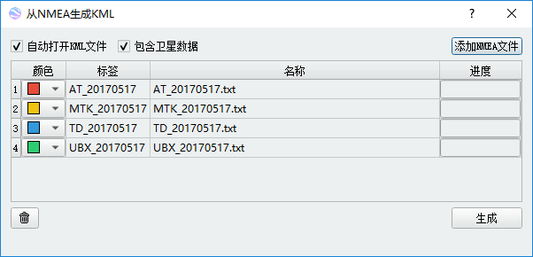
生成KML的选项
| 选项名称 | 说明 |
|---|---|
| 自动打开KML文件 | 勾选后, 会在KML生成完成时, 自动调用GoogleEarth打开KML, 并关闭对话框. |
| 包含卫星数据 | 勾选后, 会在KML文件节点描述中, 列出卫星信息. 卫星信息会占用极大的googleearth内存空间. 如果定位点众多或内存不足, 请勿选择该项. |
添加NMEA文件
点击添加NMEA文件按钮, 在弹出的对话框中选择NMEA文件. 支持多个文件的选择.
在表格中, 显示KML的属性.
| 属性名称 | 说明 |
|---|---|
| 颜色 | KML文件中, 节点的颜色, 可选择预设的颜色. |
| 标签 | KML文件中, 节点的描述标签, 可以编辑. |
| 名称 | NMEA文件的名称. |
| 进度 | 生成KML文件时的进度. |
生成KML
点击生成按钮, 批量生成KML文件.
升级导航代码
升级导航模块中的导航代码
选择升级文件
在工具菜单中, 点击升级导航代码. 在弹出的对话框中选择包含导航代码的UBF格式文件, 对串口连接中的导航模块进行代码升级.
关于我们
杭州中科微电子有限公司是一家集成电路设计企业.
产品主要方向是北斗导航定位芯片, 导航模块, 授时模块, 步进马达驱动类芯片, 模拟安防类芯片.
更多了解请访问我们的网站.
或关注微信公众号: ZKMicro
附录A
NMEA的校验和
NMEA语句的校验和为'$'和'*'之间所有字符的异或和.
以下代码计算NMEA语句的校验和.
xxxxxxxxxx181/*2 * Calculate nmea sentence's checksum3 * @buf: nmea sentence4 * @return: checksum5 */6unsigned char nmea_calc_checksum(const char *buf)7{8 const char *p = buf;9 unsigned char chs = 0;1011 while (*p == '$') // skip '$'12 p++;13 14 while (*p != '*' && *p != 0)15 chs ^= *p++;1617 return chs;18}
以下代码检查NMEA语句的校验和是否正确.
xxxxxxxxxx231/*2 * Check nmea sentence's checksum3 * @buf: buffer contains nmea sentence4 * @return: if checksum is okay return 1, else return 05 */6int check_nmea(const char *buf) {7 unsigned char chk = 0;8 const char *p = buf;9 char tmp[4];1011 while (*p == '$')12 p++;1314 while (*p != '*' && *p != '\0')15 chk ^= *p++;1617 if (*p == '*') {18 sprintf(tmp, "%02X", chk);19 return 0 == memcmp(tmp, p + 1, 2);2021 }22 return 0;23}
NMEA中的经纬度
NMEA中经纬度格式为: ddmm.mmmm.
例如: 12023.4323, 表示120度23.4323分.
以下代码将NMEA经纬度字符串转化为度.
xxxxxxxxxx121/*2 * Convert ddmm.mmmm format string into degrees3 * @s: ddmm.mmmm format string in NMEA4 * @return: degree value 5 */6double convert_from_ddmm(const char *s)7{8 double val = strtod(s, NULL);9 int degrees = (int)val / 100;10 double minutes = val - degrees * 100.0;11 return degrees + minutes / 60.0;12}
更多NMEA解析
请参考开源工程: https://github.com/zxcwhale/NmeaParser
© Copyright 杭州中科微电子有限公司.
This document is written by LiHangjia using Typora.